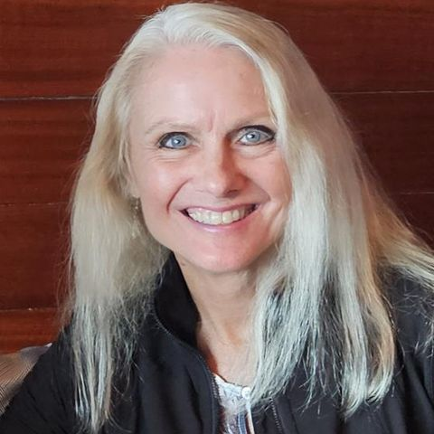
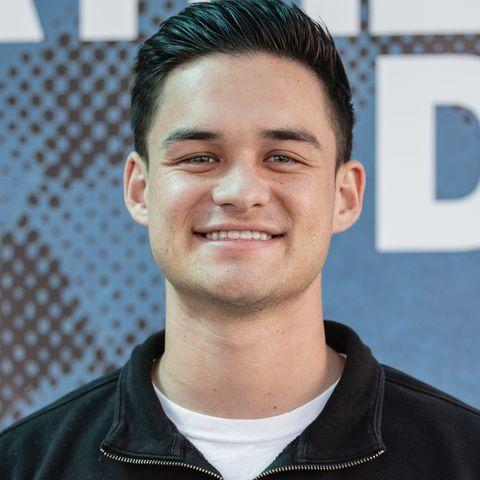
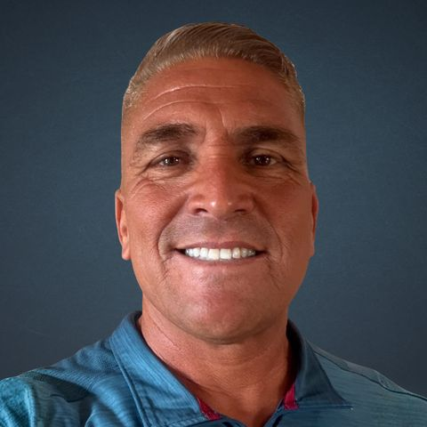
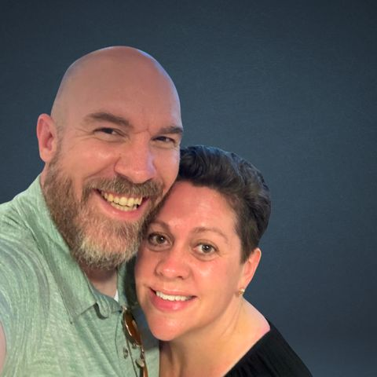
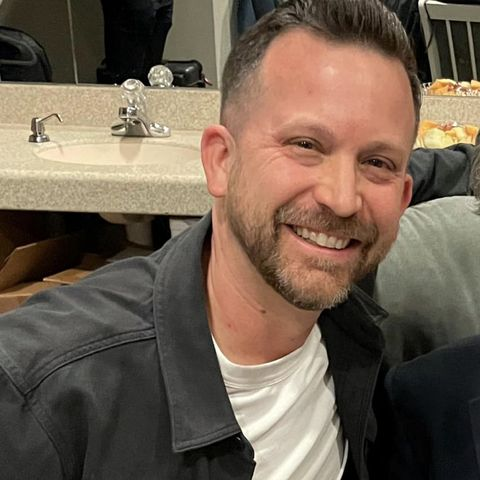

Leadership
Meet the people leading and supporting church groups across The Rock Network.
- Groups Leadership & Overseers
Rock Groups Leadership Team
From homes to parks, schools to workplaces, our discipleship and church groups are engaging with Jesus Disciple and training disciples to become disciple-makers.
We have a group of faithful people who have committed themselves to the vision and to providing practical and prayer support to our groups.
 Jerry DirmannDirector
Jerry DirmannDirector- Tina ShubinAsst. Director
- Eryne NevarezOperations
- Crissy ShubinAdmin Asst.

Regional Overseers
By Region
Los Angeles & Orange County
- Jerry Dirmann
 David & Roxy Crosby
David & Roxy Crosby David & Paulina Cadena
David & Paulina Cadena
The Rock West
 Manny & Andrea Orozco
Manny & Andrea Orozco
Western U.S.
- Helen Horton
Eastern U.S.

Misti Osmialowski Mary Lee Zawrotny
Mary Lee Zawrotny
San Bernardino/Riverside Counties
 Christy Mireles
Christy Mireles
By Ministry & Online
Online
- Ben Flores
Abide Youth
- Alex Sierra
 Michael Gomez
Michael Gomez
Beyond Young Adults

Jared Nitzel
Jesus Clubs
- Nicole Nitzel
The Rock Anaheim Men’s Ministry
 Brian Palacios
Brian Palacios
Michael Jaimes
Sub-Networks
Iglesia Mi Ciudad
 Jose & Isabel O'Neill
Jose & Isabel O'Neill
To Serve Mankind

Jeff & Jennifer Little
Backyard Revival
- Nicole Nitzel
The Rock Leaders
- Jerry Dirmann
 Kimberly Dirmann
Kimberly Dirmann Jonathan Dirmann
Jonathan Dirmann- Carl McAulay
- Corey Theetge
 Jim Scott
Jim Scott- Jose & Isabel O'Neill
- Manny & Andrea Orozco

Tristan Fenholt
Lead a group with us
A church group gathers, grows, gives and goes together, using the Jesus Disciple App.